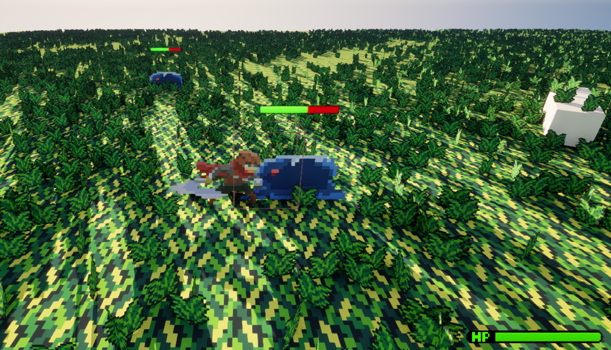
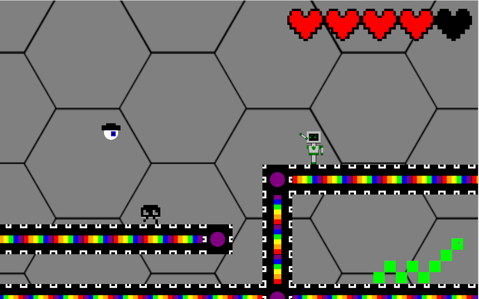
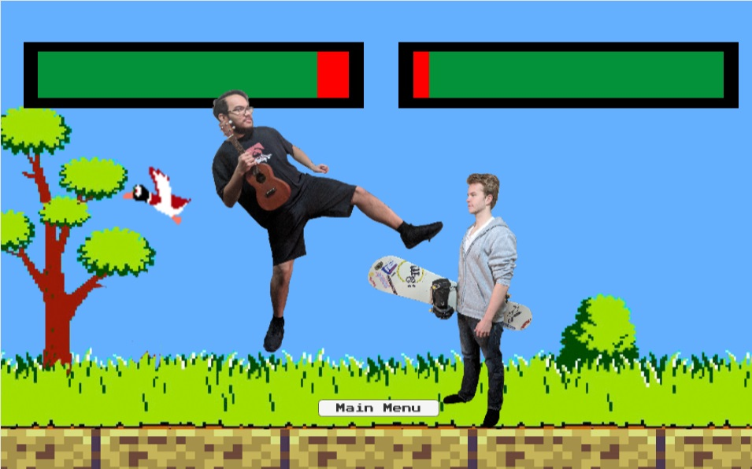
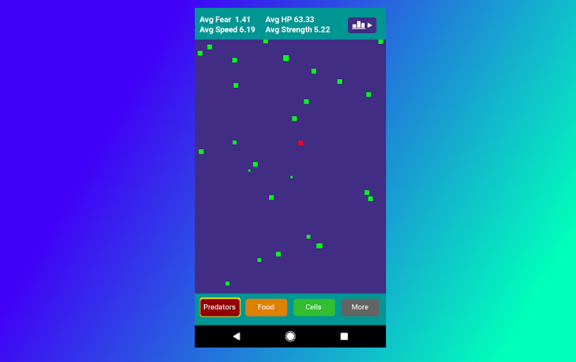

University of Arizona - 2024
B.S. Applied Computing, Software Development Emphasis
Computer Science graduate with a passion for creating interactive media and finding innovative ways to tackle a problem. Having studied Computer Science for over 15 years, I've had exposure to and practice with many different programming languages and use cases. Digital interactive games are my favorite to work on, and I've worked in multiple IDEs such as Unity, Android Studio, and have recently taken on learning Unreal Engine 5. I have over five years of experience in the IT and cybersecurity industries, having worked on projects like programming digital signage and meeting room reservation applications on embedded systems, local to cloud domain migrations, and Incident Response planning and training. Aside from programming, you can find me traveling the world, trying exotic foods, cooking something delicious, or just sitting around with my favorite games.

Slime Slayer
Unreal Engine 5
My current project being built in Unreal Engine 5 using the PaperZD plugin to achieve a HD-2D artstyle. Key features of this project include, free-roaming enemy NPCs that will chase the player if within eyesight, dynamic hitboxes for different attacks in a combo, an interaction system where the player may heal if picking up a mushroom, and stylized 2D textures in a 3D space.

B.S.O.D. Unity
University of Arizona senior project. Learn about different kinds of computer viruses in this sidescrolling game where the player must switch between three different protocols to more effectively destroy each kind of virus. Viruses have different behaviors and weaknesses, so it is important to note the appropriate security protocol.

Friend Fighting Game
Unity
Inspired by the digitized sprites of 90s fighting games, this project uses a collection of real-life photos for each playable character and uses a rigid-step-style of animation.

Petri
Android Studio - Java
A number of free-roaming green cells are placed into an environment, each with randomly generated stats for characteristics such as size, speed, health, hunger,and fear. The user may influence the cell population by placing food or predators into the environment. Based on a cell's attributes, it may seek out food, and once it eats enough, will reporduce. A reproducing cell's stats will impact the stats of the child cell it produces. The user may also place predator with adjustable stats that will seek out cells to kill. After multiple generations of cells, the population may evolve to a point in which it can outrun or even fight back against the predators.